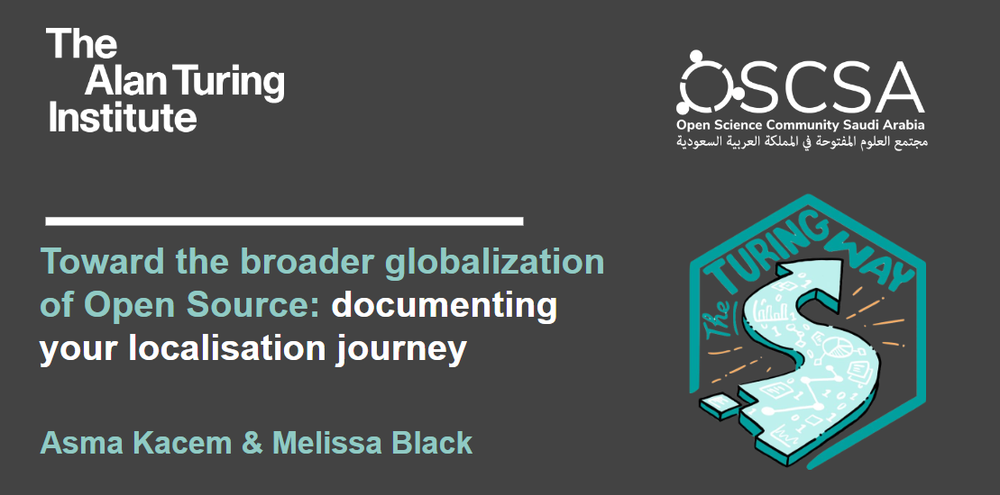
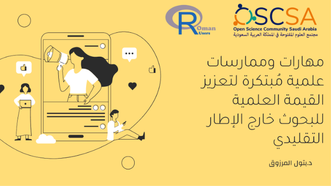
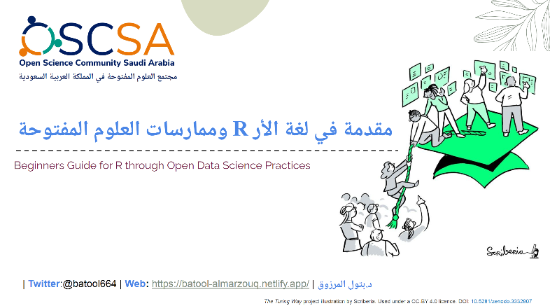
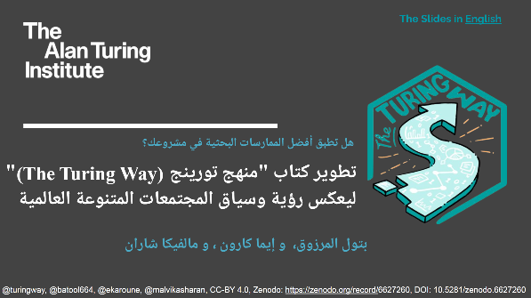

أحداث OSCSA
تركز فعاليات مجتمع المصادر المفتوحة بالمملكة العربية السعودية (OSCSA) على تمكين وتحفيز ممارسات البحث المسؤولة وسياسات العلوم المفتوحة.
الأحداث القادمة
لا يوجد حدث مدرج
الحدث الأخير

الاستفادة من العلوم المفتوحة في التعلم الآلي والمعلوماتية الحيوية
المتحدثونم: Batool Almarzouq
لغة:إنجليزي
29 سبتمبر 2022

نحو العولمة الأوسع للمصدر المفتوح: توثيق الترجمة رحلة
المتحدثونم: Melissa Black and Asma Kacem
لغة:إنجليزي
13 سبتمبر 2022

تبسيط سطر الأوامر (عربي)
المتحدثونم: Batool Almarzouq
اللغة: العربية
13 أغسطس 2022

منهج العلوم المفتوحة لزيادة قابلية اكتشاف مخرجات البحث المحلية (العربية)
المتحدثونم : Batool Almarzouq
اللغة: العربية
1 أغسطس 2022

دليل المبتدئين لـ R من خلال ممارسات علوم البيانات المفتوحة (عربي)
المتحدثونم: Batool Almarzouq; Hussain Alsalman; Monah Abou Alezz; Abulrahman Alasiri; Haifa Ben Messaoud; Ammar Alkhaldi; Abulrahman Alswaji
لغة:إنجليزي
2 يوليو 2022 و 3 يوليو 2022

هل تنطبق أفضل الممارسات على مشروعك؟ تحديد سياق طريقة تورينج للمجتمع العالمي. [مواد ورشة العمل باللغتين العربية والإنجليزية]
المتحدثونم: Almarzouq, Batool; Karoune, Emma; Sharan, Malvika;
اللغة: العربية والانجليزية
9 يوليو 2022